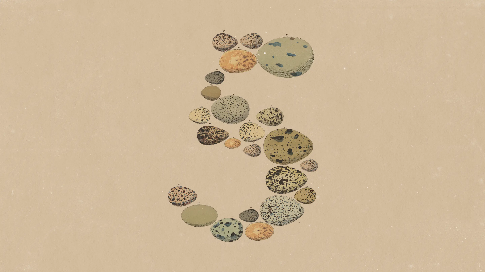
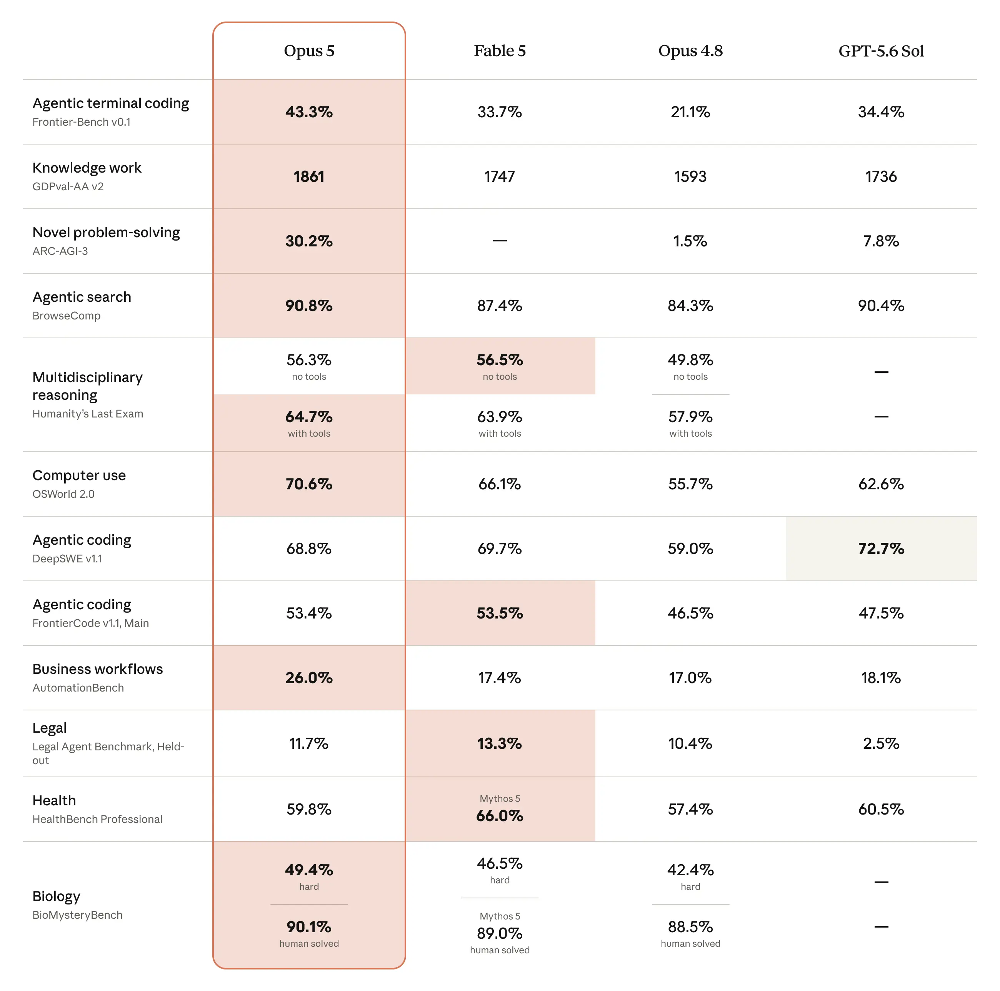
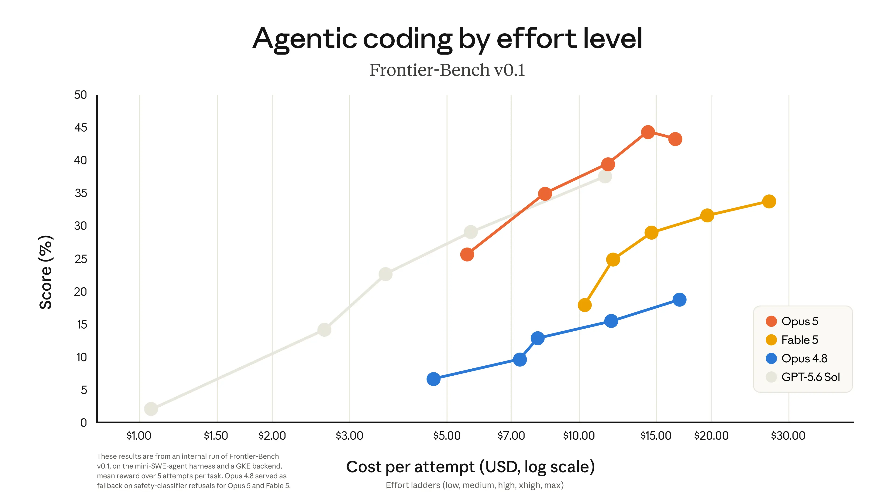
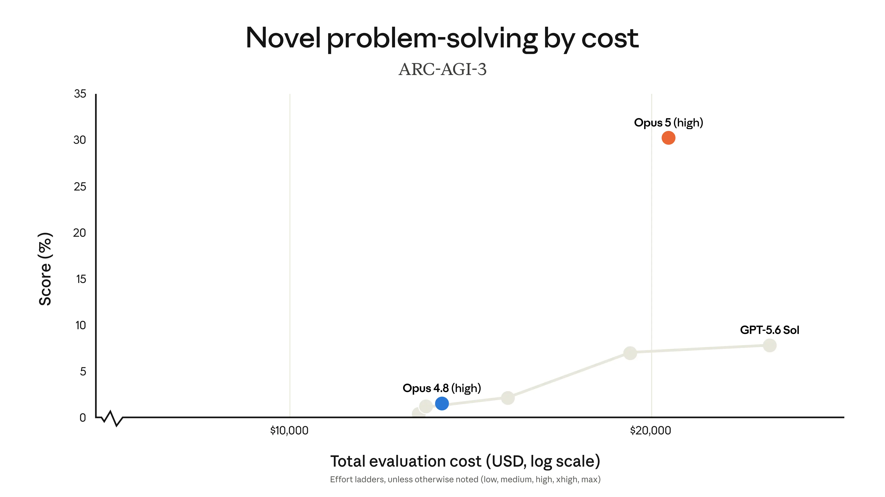
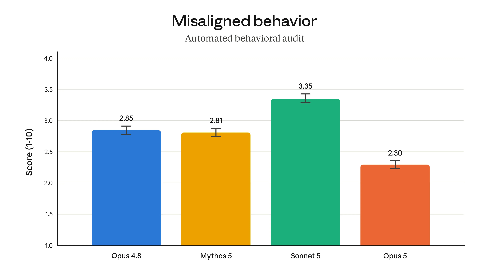
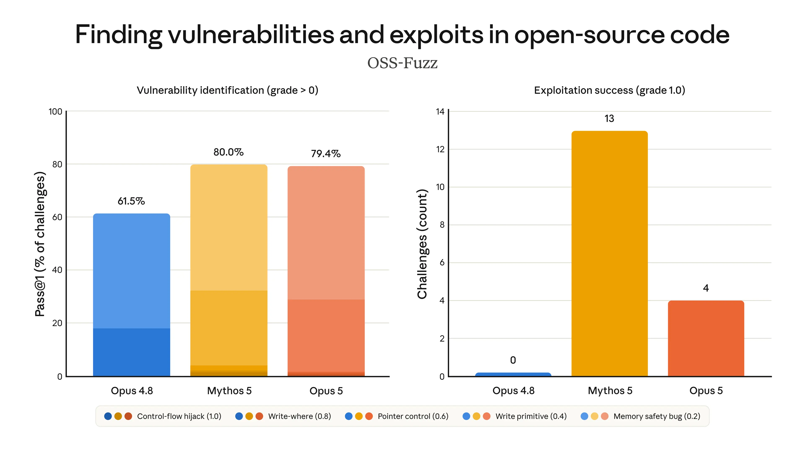

Introducing Claude Opus 5

Claude Opus 5 is available today. It’s a thoughtful and proactive model that comes close to the frontier intelligence of Claude Fable 5 at half the price.
On coding and knowledge work evaluations like Frontier-Bench and GDPval-AA, Opus 5 is the new state-of-the-art, though it remains behind Mythos 5 on cybersecurity tasks.
Opus 5 is designed to be used every day: it works more efficiently than other models. It’s the new default model on Claude Max, and the strongest model on Claude Pro.

Performance and cost-effectiveness
Claude Opus 5 provides greatly improved performance for the same cost as its predecessor, Opus 4.8. The charts in this section show how performance changes according to the model’s effort setting, which customers can use to optimize for intelligence or conserve tokens for faster and cheaper results.
Opus 5 excels on valuable software engineering tasks. For example, on Frontier-Bench v0.1, Opus 5 surpasses all other models, and more than doubles Opus 4.8’s performance at a lower cost per task. On CursorBench 3.2, at max effort, the model performs within 0.5% of Fable 5’s peak score, but at half the cost per task; it also achieves greater performance at a given cost than all other models on high, xhigh, and max effort.

We see similar results on knowledge work and problem-solving tasks. For example:
- On ARC-AGI 3, an evaluation where the model has to solve novel problems, Opus 5’s score is three times as high as the next-best model.
- On Zapier AutomationBench, which measures whether models can complete business tasks from start to finish, Opus 5’s pass rate is around 1.5× the next-best model for the same cost per task. Even at its lowest effort setting, Opus 5 passes more tasks than any other model.
- On OSWorld 2.0, a computer use benchmark, Opus 5 outperforms every other model at any given cost, surpassing Fable 5’s best result at just over a third of the cost.
It’s also our best and most cost-efficient model on several related evaluations:

Opus 5 is a meaningful improvement over Opus 4.8 for scientific research. It shows better performance than Opus 4.8 on every one of our life sciences evaluations, which cover topics including structural biology, organic chemistry, and bioinformatics. Its improvements are most notable on organic chemistry tasks, like inferring molecular structures from spectroscopy data (it scores 10.2 percentage points higher than Opus 4.8 on our internal benchmark), and on protein-related tasks like predicting how variations in a protein’s sequence affect how it functions (here, it scores 7.7 percentage points higher).
Finally, Opus 5 is capable of producing much stronger visual outputs:
Working with Claude Opus 5
Claude Opus 5 is much stronger at verifying its work and iterating carefully until it succeeds. In evaluations and early-access testing, we and our users found many examples of Opus 5’s agency and thoroughness:
- On one Frontier-Bench task, Opus 5 was given a drawing of a machine part and asked to write code to rebuild it as a 3D FreeCAD model. However, in this task, the model was intentionally given no way to directly view the drawing. Opus 5 responded by writing its own computer vision pipeline to pull the geometry from the raw pixels, then reconstructed the full machine part. It succeeded in doing so repeatedly; no competing model with the same setup could solve it after five attempts.
- Given a real bug in a popular open-source package manager, Opus 5 found the root cause and fixed an edge case that the community’s patch had missed. A competing model fixed only the surface symptom (not the underlying cause), then reported the bug resolved.
- An engineer at a trading firm used Opus 5 to build a market data feed for a new exchange in a single session. Previous models could not complete this task at all, even given extensive plans from the engineer. Finding no live feed to validate against, Opus 5 even built its own test harness to check that its code parsed the exchange’s data correctly.
Below are further reports from our early-access customers on their experience of working with Opus 5:
On FrontierCode 1.1, Claude Opus 5 approaches Fable-level performance at half the cost. Within Devin, it also shows particular strength on difficult debugging and root-cause analysis tasks.
Claude Opus 5 delivers near Fable 5 intelligence at Opus speed and cost. On CursorBench it’s just under Fable 5 and has many of the same behaviors. We are excited to see how developers use it in Cursor.
Claude Opus 5 topped Zapier’s AutomationBench leaderboard without spending more tokens than prior Claude models. It took a raw account-health workbook and ran a full churn-prevention sequence end to end: flagging at-risk accounts, alerting the right owner, and summarizing for retention ops. Previous models didn’t pass; Opus 5 hit 100%.
On our genomics analysis work, Claude Opus 5 behaves more like a careful scientist than any model we’ve run. It reaches for the right statistical tests to rule out confounders, cross-checks its own results by independent methods, and stays on track through long multi-step analyses.
Claude Opus 5 came out ahead of every model in its family on our internal evals. It isn’t just better on our hardest agentic coding tasks, up 22% over Opus 4.7, it’s steadier, with far less variance run to run. For the millions of builders on Lovable, that consistency is the whole game. Reliable results, build after build.
Claude Opus 5 is the biggest leap in the Opus family since 4.5. On the same full-stack app builds, the front end shows it first: the best animations, games, and 3D work we have seen from an Opus model.
We’re loving Claude Opus 5. For the kind of open-ended analytical work our agent handles, it’s a strict upgrade over Opus 4.8, and the gains are biggest exactly where it matters: the harder, vaguer tasks. Responses are clearer and more concise, and we see improved efficiency at higher effort levels too.
Claude Opus 5 is a striking improvement over Opus 4.8 for the financial research workflows our analysts run every day. It stands out on numerical reasoning, table work, and sharper critical thinking where precision matters.
Claude Opus 5 delivers the industry intelligence and accuracy that is essential for the analysis of specialized enterprise content. Box found that Opus 5 outperforms Opus 4.8 by 8% and delivers notable performance gains in the data analysis (11% improvement) and due diligence (17% improvement) workflows that technology, healthcare, and public sector organizations rely on daily.
Claude Opus 5 is a clear generational step up from Opus 4.8. Over one weekend I gave it a chief-of-staff role over my dev environments: it built its own monitor, drove each box, and pulled me in only for the judgment calls.
Claude Opus 5 made large scale changes across our Fundamental Research Assistant codebase, adapting to feedback throughout an agentic workflow and explaining its reasoning more clearly than any model we’ve used. It handled work we would normally have broken into much smaller pieces.
On some of our hardest financial-modeling tasks, Claude Opus 5 is a clear step up from Opus 4.8 in both accuracy and efficiency. Its performance floor is materially higher, especially on deep finance domain logic. Across effort levels it averaged 9 percentage points higher accuracy with a third fewer turns and tool calls and 60% less time.
Claude Opus 5 checks its own work the way a real frontend developer would. On our benchmark it opened its pages in a browser at desktop and phone widths, caught a product hidden below the mobile fold and an off-screen checkout button, and fixed both before handing the work back.
Claude Opus 5 is a clear step up in performance on legal agent work compared to prior Opus models, and we saw the biggest gains in practice areas like corporate governance and arbitration. We were also impressed with Opus 5’s ability to maintain quality at lower reasoning levels, achieving similar performance while generating 26% fewer tokens on average compared to Opus 4.8 at max reasoning.
Claude Opus 5’s biggest gains for us are on longer-horizon work: building a full deck, then revising it. Artifact quality is what decides which model we ship, and this is the clearest step up we’ve seen — better visual understanding, cleaner formatting, fewer slide issues.
Claude Opus 5’s judgment is what stands out. Handing off a PR, it doesn’t rush to publish: it verifies the branches, checks the template, and thinks through test implications so the handoff is clean. The older models tended to jump ahead and get caught on our checks.
During a rearchitecting session, Claude Opus 5 pushed back on a design I proposed, and it didn’t fold when I insisted. Instead, it explained exactly what was valuable in my idea, narrowed its objection to a single design question, and proposed a compromise that kept the good part while fixing the flaw. That’s the kind of judgment that lets us trust it with less oversight.
On first-turn redlines, Claude Opus 5 scored the highest of any model we tested, nearly double Opus 4.8. Commenting is better too: on NDAs it gets to the redline in less time and with fewer passes, with accuracy maintained or better.
Claude Opus 5 writes clean, tight diffs with no dead code, and it’s the stronger hazard spotter on subtle, codebase-specific issues. We’re adopting it for production workloads.
We will definitely migrate a number of use cases in Cosmos, our unified agent platform. We’re looking forward to increasingly using Claude Opus 5 for code review, and I am confident in saying we would rather people be using Opus 5 than Opus 4.8.
What stands out about Claude Opus 5 is judgment. It thinks harder before it writes a single line, catches its own logical faults during planning rather than after the fact, and reasons about why an answer is right, not just whether it works. It’s the clearest jump in problem-solving we’ve seen from one Claude model to the next, and we’re looking forward to seeing it adopted in JetBrains IDEs.
Claude Opus 5 is the strongest Opus model we’ve tested on our trading benchmark, and it gets there using roughly a seventh of the reasoning tokens and under half the latency of Opus 4.8. Better answers at a fraction of the compute.
Claude Opus 5 lets monitoring agents manage parts of their own memory in production, making them more autonomous and reliable over longer horizons. The agent treats its context as a living document: after flagging a potential anomaly in one of our services, it re-checked its own assumption against production, found the signal was benign, wrote the correction into its memory, and retired its monitoring queries on its own.
Claude Opus 5 is a strong agentic coding model built for long-running, multi-step work. It deeply understands your codebase, holds the thread across complex tasks, and pins down requirements for feature development and bug-fixing more effectively than Opus 4.8. Developers can now build with Opus 5 in Kiro, accessing its advanced capabilities to tackle ambitious projects.
Alignment and safety
Alignment. During pre-deployment testing, our automated behavioral audit found Opus 5 to be our most aligned model to date (as shown in the graph below). It adheres to Claude’s Constitution better than Opus 4.8, Sonnet 5, or Fable 5; exhibits the lowest rates of deceptive behavior; and is the least susceptible to being tricked into misuse. It’s also our safest model yet in terms of avoiding reckless actions that could have hard-to-reverse side effects.

Safety. Opus 5 does not advance the frontier in risky, dual-use capabilities. In rigorous evaluations conducted alongside private-sector and government partners, we found it remains behind Mythos 5 in both biology research and offensive cybersecurity. More information about these evaluations can be found in our System Card.
As with its predecessor, Opus 4.8, we’ve intentionally avoided training Opus 5 on cyber tasks. The model has nevertheless improved substantially on these tasks as a result of becoming more generally capable, and it comes close to Mythos 5 at finding cybersecurity vulnerabilities. However, it remains substantially behind Mythos 5 on the exploitation of those vulnerabilities—that is, in turning vulnerabilities into material cyber threats.
This is illustrated by Opus 5’s performance on OSS-Fuzz, an evaluation we’ve developed to assess how well models can find and then exploit vulnerabilities without extensive human guidance. Although Mythos 5 and Opus 5 identify vulnerabilities with similar success, Opus 5’s score on the development of exploits is far behind that of Mythos 5.

Safeguards for Opus 5
Claude Opus 5’s safeguards are designed to allow beneficial uses of the model in both cybersecurity and biology. They are similar to those we applied to Opus 4.8, with the exception of some stronger guardrails on a narrow range of cyber tasks.
Cybersecurity. Opus 5’s cyber classifiers are proportionally less restrictive than those on Fable 5. They allow Opus 5 to find vulnerabilities in source code, but block “binary-based” vulnerability scanning (a method more likely to be associated with malicious actors), penetration testing, and exploit generation.
Based on our testing, we expect the classifiers to intervene around 85% less often than they do for Fable 5. In Claude.ai, Claude Code, and Claude Cowork, any flagged requests will fall back to Opus 4.8 by default. Fallbacks to Opus 4.8 can also be enabled on the API.
Our Cyber Verification Program (CVP) facilitates cybersecurity work that would otherwise be impeded by the model’s safeguards. Enterprises and researchers who are already part of the CVP have immediate access to a version of Opus 5 with fewer security restrictions.
Biology. Since Opus 5 has a similar suite of safeguards to Opus 4.8, it is now our most capable generally available model for scientific research. Nevertheless, the model still shows important limitations on long-running, autonomous research tasks, which is where we expect AI models to pose the most substantial biology-related risks. (Mythos 5 remains the stronger model for this type of biological work.) As part of this launch, biology-related requests that are blocked on Fable 5 will now route to Opus 5 rather than Opus 4.8.
Getting started
Claude Opus 5 is available today on all platforms, priced at $5 per million input tokens and $25 per million output tokens (the same as Opus 4.8). Developers can get started with claude-opus-5 on the Claude API.
It’s also offered in Fast mode, where it runs around 2.5 times the default speed. As with Opus 4.8, Fast mode is available at twice Opus 5’s base price on the Claude Platform and through usage credits in Claude Code.
Alongside Opus 5, we’re releasing two updates in beta:
- Mid-conversation tool changes on the Claude Platform. Within a conversation, developers can now change which tools Claude can use without invalidating the prompt cache.
- Automatic fallbacks on the API. Users can now choose to have requests that are flagged by our safety classifiers on Opus 5 (or Fable 5) automatically route to another model. With automatic fallbacks on, API requests always route to the best available model by default rather than being blocked.
Consistent with prior Opus models, Opus 5 does not have data retention requirements for general access.
For more guidance on how to get the best out of Opus 5, see our prompting guide.
Footnotes
Frontier-Bench v0.1, Effort plot: These results are from an internal run of Frontier-Bench v0.1, on the mini-SWE-agent harness and a GKE backend, mean reward over 5 attempts per task. Opus 4.8 served as fallback on safety-classifier refusals for Opus 5 and Fable 5.